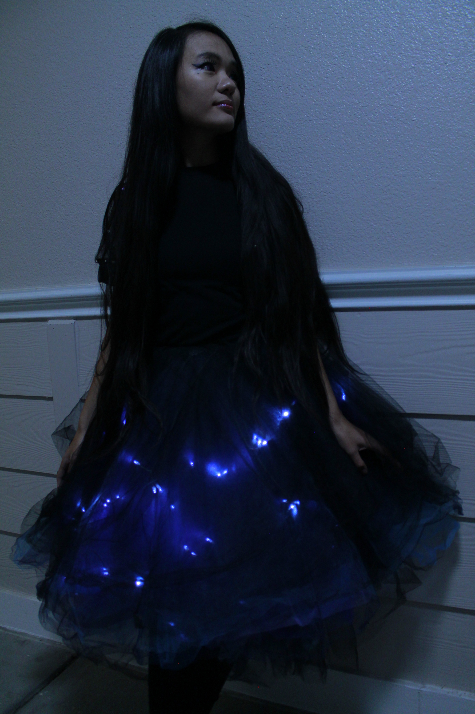
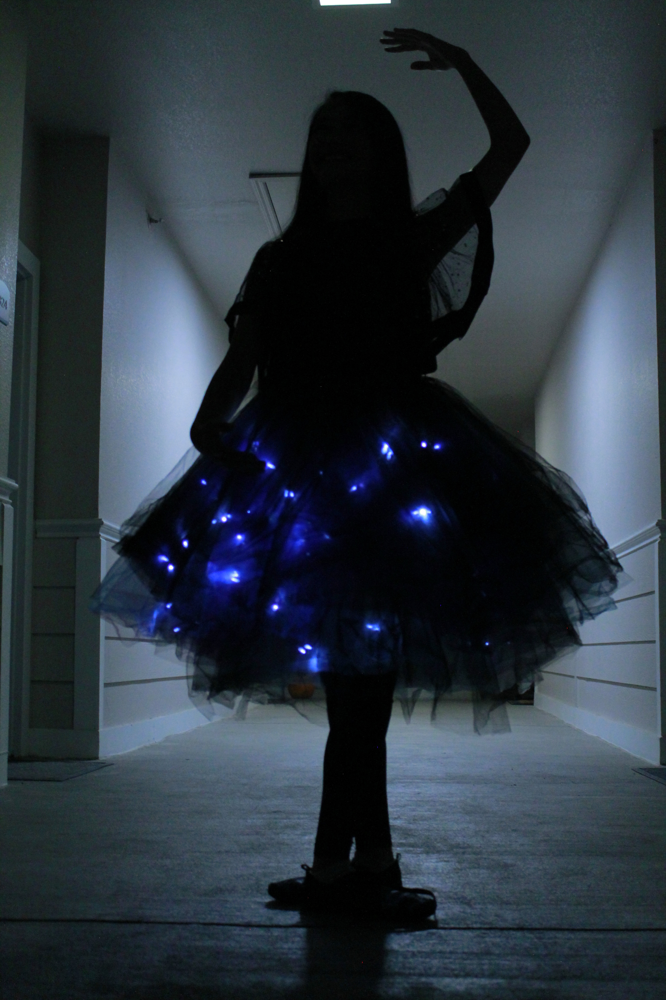
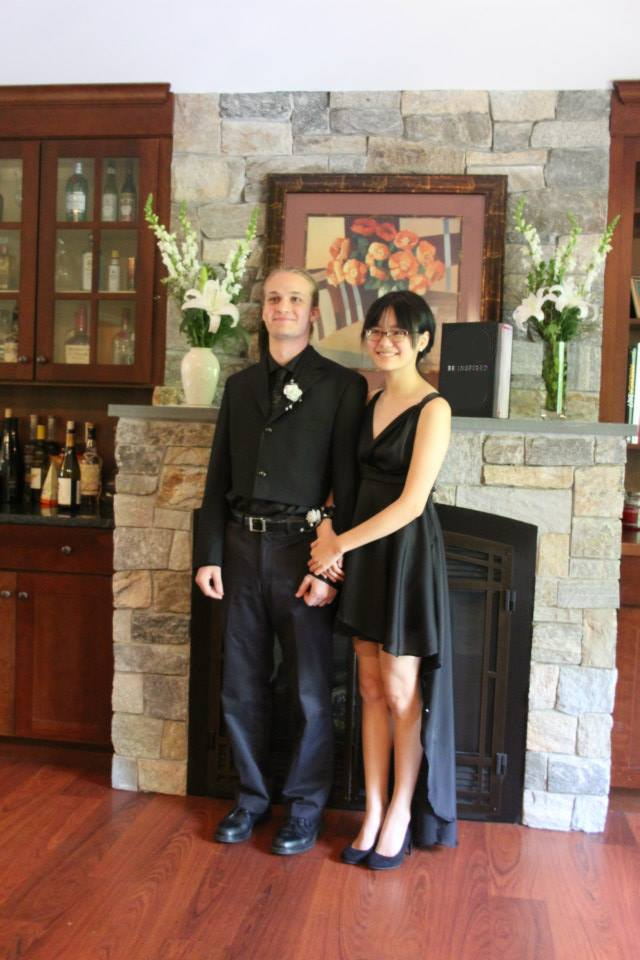
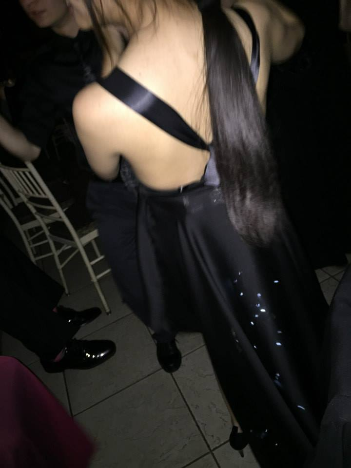
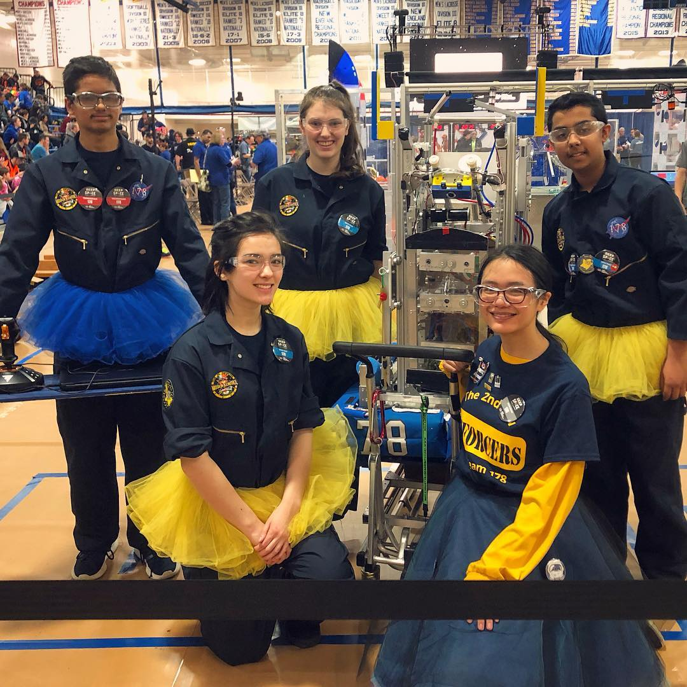
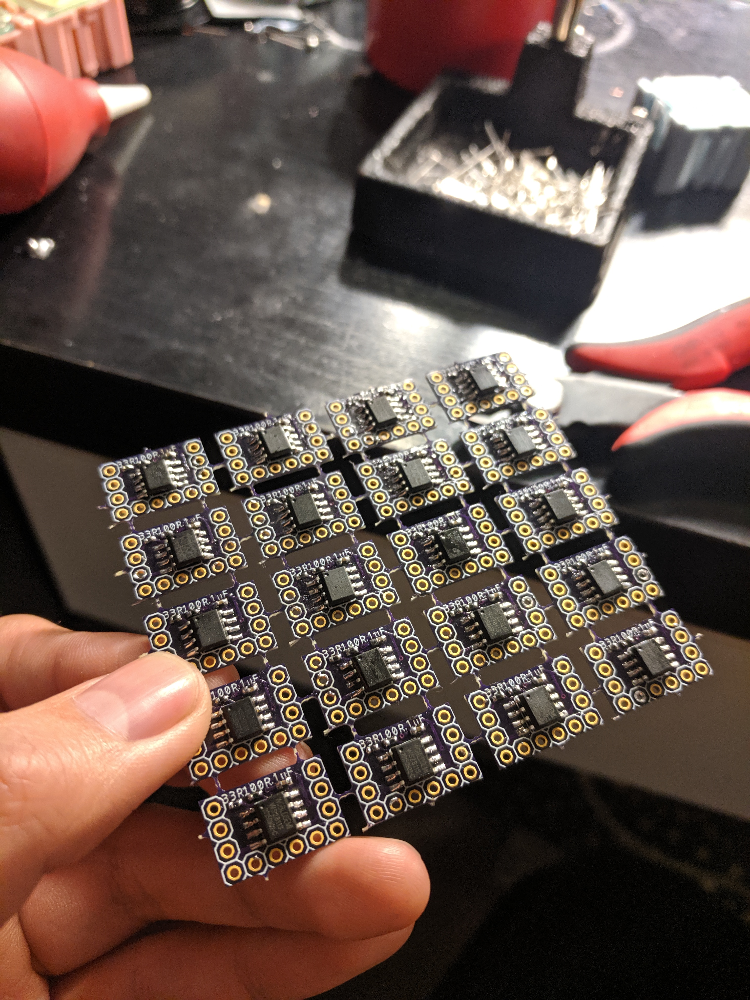
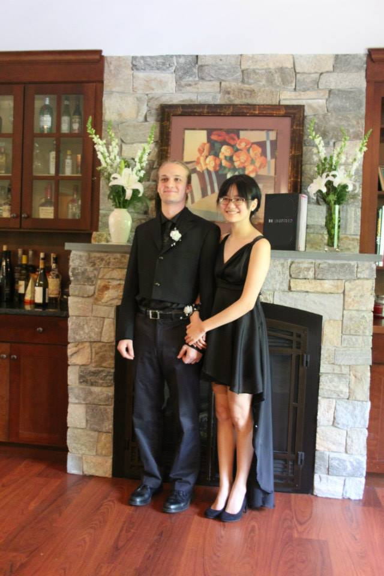
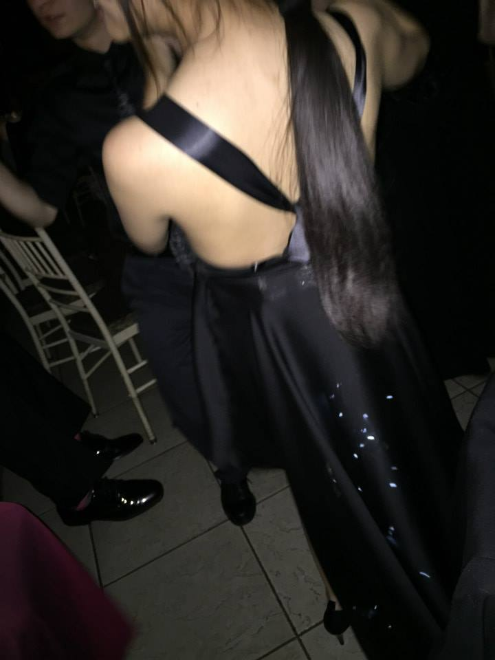
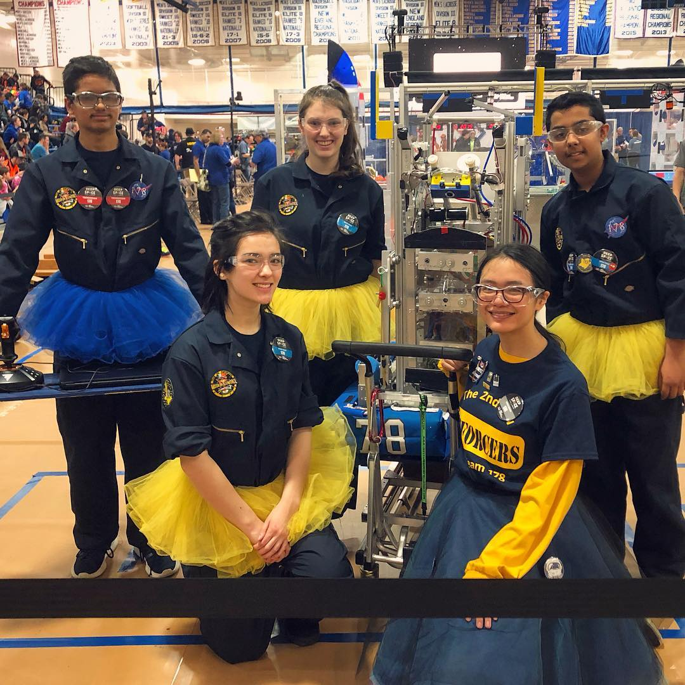
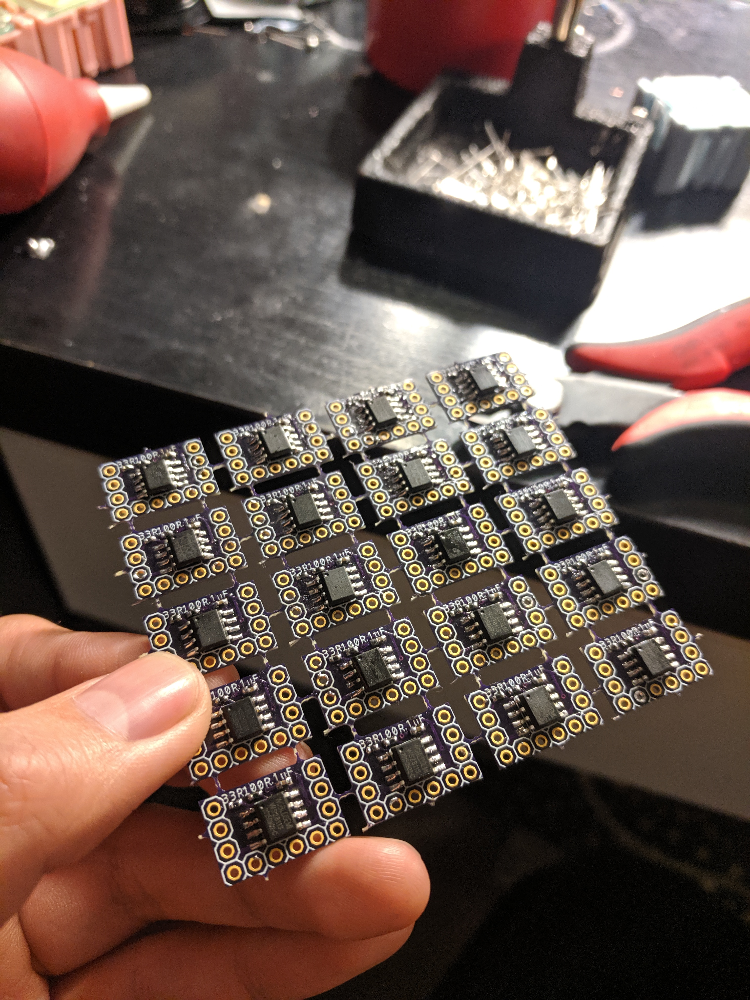

I developed a custom miniature circuit board system, designed to be modular and easy to wire. I optimized for low cost-to-star ratio compared to existing methods with similar individual control over the brightness of each light.
I hand-soldered every tiny surface mount component, made cables for 144 3mm LEDs out of scrap Ethernet cable, and programmed an algorithm that would twinkle each star in its own unique and subtle pattern.
I've wanted to do this project since January, when the FIRST Robotics Competition game came out. This year, the kids had to build a robot that played a space-themed game. It was my 6th and final year serving as a mentor for the team, something I've been doing ever since I graduated high school, and I knew I was moving away this summer to finally complete my college degree.
So I volunteered to coach the drive team, and directly support them on the field during the heat of competitions. The kids decided they all wanted to wear tutus to show spirit (the boys too, if that wasn’t obvious!) so I went along and made the biggest tutu I could manage. Our team color, navy blue on the surface, then purples and cyans, and yellows and oranges, and finally white for the bright hot center of the galaxy. It would have been fun to add lights, but my time was limited, finalizing college plans and helping the family move out of the house.
I've wanted to do this project since senior year of high school, when I first learned to sew. I made my prom dress, overly ambitious and underprepared. I wanted to wear a star gown back then, too, so I asked my date to teach me how to make a custom PCB and build the circuit. It didn’t quite work: only one quarter of the LEDs ever turned on, and we never figured out why.
I’ve wanted to do this project ever since every moment I realize I made a circuit with a fatal mistake, for every time that I abandon a project, and for every time I start again, despite the risk of disappointment.
 
I’ve wanted to do this project since middle school, when I drew my first space dress design, but didn’t have the skills or resources to make it.
I’ve wanted to do this project ever since I was a small child, the first time I ever picked up a marker and drew something, the first time I ever dreamed of a more fantastical world.
I might not have known at the time, but every project and every dream I’ve ever had, I was already working on, before I even knew exactly what it was. And (although sometimes it doesn’t feel like it, when I’m struggling through differential equations, or can’t get my dumb code to work) I’m already working on every ambition I have now or will dream up in the future. Be it landing a dream internship this summer, or perhaps someday being part of the team that builds a telescope that will find a habitable exoplanet in a solar system far away, what I do now builds towards future skills and accomplishments beyond what I can imagine now.
Appendix
Special thanks to Fayth Krause for being the best photographer ever!
Here are some supplementary images:
 







click for full size. right to left:
drawing from middle school / senior prom dress / the only photo evidence i have of the lights / FRC drive team 2019 / custom PCBs


{kind=link}
{kind=link}
{kind=link}
{kind=link}